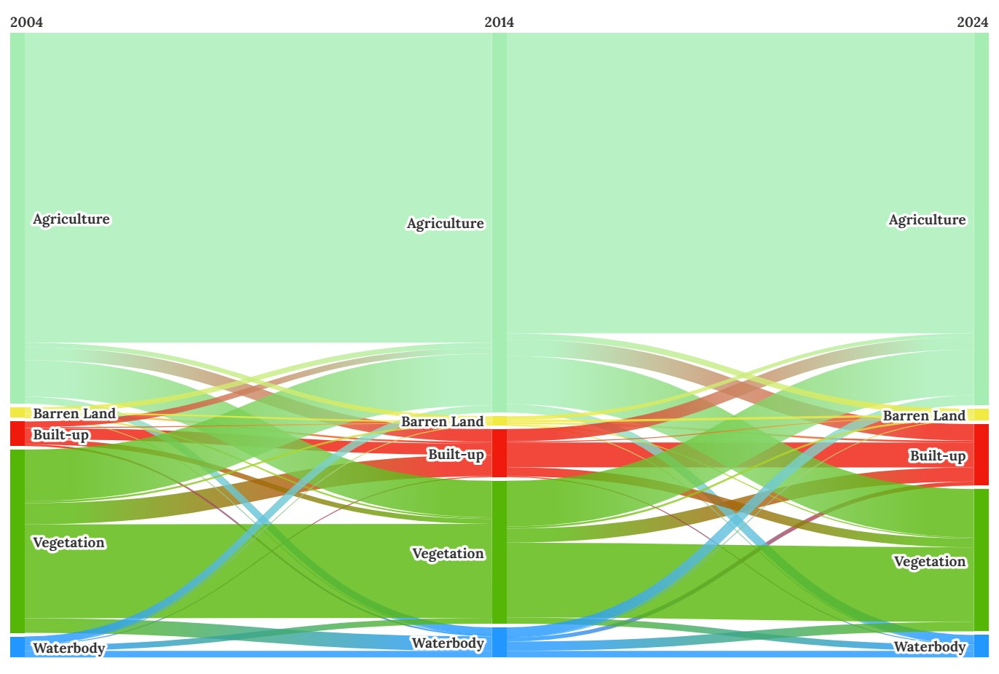
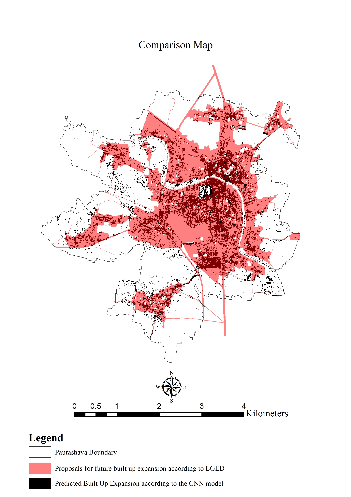
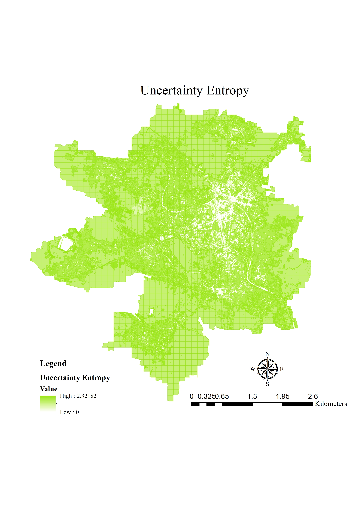

Framework for Predicting Urban Growth Pattern in Data Scarce Region
🔑 Objective
- To predict land use/land cover (LULC) changes of a municipality in Bangladesh using a ConvLSTM model with static drivers (DEM, distance to road).
- Comparison of the Predicted Growth with the proposals of Municipalitie's master plan.
...
Growth Pattern Analysis by Maximum Likelihood Supervised Classification
🗺️ Land Cover Maps

🔄 Land Use Transitions
Sankey Diagram (2004–2014–2024):

- Vegetation and agriculture were the major sources of built-up growth.
- Bidirectional transitions observed between vegetation and agriculture.
- Built-up areas increased from 0.88 km² (4.01%) in 2004 → 2.22 km² (10.07%) in 2024.
📉 Change & Comparison Maps
Change Detection:

Comparison of Actual vs Predicted (2024):

- Actual built-up: 2.22 km²
- Predicted built-up: 2.48 km² (well aligned, slight overestimation)
🏗️ Model Architecture

ConvLSTM Setup
- Inputs: LULC (2004, 2014), DEM, Distance-to-road (patches 128×128)
- Layers: 2 × ConvLSTM2D (filters: 32, 64), batch norm, dropout, up/down-sampling
- Loss: Categorical Cross-Entropy, Optimizer: Adam (lr=0.0001)
- Metrics: Overall Accuracy (65%), F1 Score (66%), QADI (0.09–0.13)
🔮 Prediction Maps
Predicted LULC (2031):

Comparison with Master Plan (2031):

- Model forecasts built-up growth to 3.53 km² by 2031.
- Some “urban deferred†zones in the master plan showed discrepancies with actual growth direction.
âš ï¸ Uncertainty Analysis
| Entropy Map | Uncertainty Map |
|---|---|
|  |  |
- Low entropy & high confidence in central built-up zones.
- Higher uncertainty in transitional zones (vegetation/agriculture).
📌 Key Findings
- Built-up growth followed a linear, road-oriented pattern (N7 highway, Chitra river).
- Vegetation decreased (30.04% → 23.31%), while agriculture remained mostly stable.
- Waterbodies declined from 1.74 km² (2014) → 0.81 km² (2024), reflecting weak enforcement of conservation policies.
- ConvLSTM predictions aligned closely with actual 2024 LULC, outperforming CA–ANN.
- Uncertainty analysis confirmed reliable classification in central urban zones.
- Master plan (2031) projections did not fully capture growth in “deferred†areas.
📖 Takeaways
- ConvLSTM provides a robust framework for predicting small-town urban growth using freely available imagery.
- Results highlight the importance of integrating ML/DL with planning to reduce reliance on outdated population-based projections.
- Findings can guide policy-makers in revising master plans and adopting evidence-based zoning for sustainable development.